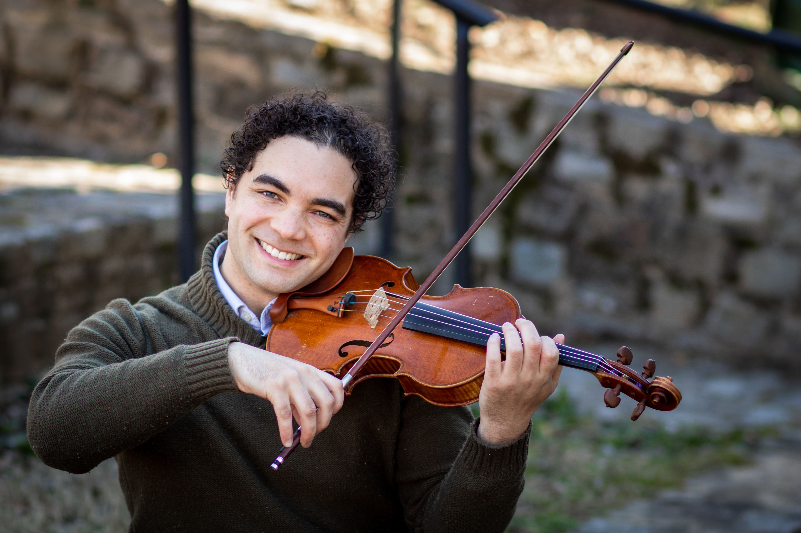

Clover Hill High School Orchestra
Midlothian, Virginia
Meet the Director Mr. Justin Williams
As an active performer, Mr. Williams has served as Concertmaster of the Fairfax Chamber Players and the VCU Symphony Orchestra. In high school, he earned a seat in the All-Virginia Orchestra on double bass and violin. He is currently a first violinist in the Northern Neck Orchestra.
Justin began his public school teaching career in St. Louis, Missouri with the Riverview Gardens School District. Mr. Williams thrived in the underserved and underfunded environment by initiating new instructional methods and extracurricular programs. In 2014, he was voted as Teacher of the Year. Mr. Williams was then employed as one of the orchestra directors for Centreville High School and Willow Springs Elementary School, two of the largest orchestra programs in the state of Virginia. He is currently the AP Music Theory Teacher and Orchestra Director at his alma mater, Clover Hill High School Academy for the Arts. Under his leadership the orchestra has won two First Places Trophies and one Grand Champion trophy at recent Music Festivals. The CHHS Chamber Orchestra has earned Superiors at the VBODA District 3 Assessment for the past 20 consecutive years. He was the Dean of Students for the Wintergreen Summer Music Academy in 2017 and 2018.
Justin holds a Bachelor’s degree in Music Education from Virginia Commonwealth University where he was a violin student of Susanna Klein and Simon Lapointe. He also focused on keyboard studies with classes in Score Reading, Organ and Jazz Piano.
Mr. Williams founded Cavalier 21 in 2017 to introduce the Greater Richmond Community to a high quality string orchestra sound.


Calendar
First Nine-Weeks
October 5: Orchestra Council Meeting
October 30: Fall Orchestra Concert
Second Nine-Weeks
November 2: Orchestra Breakfast
November 11: Orchestra Council Meeting
January 13: Orchestra Council Meeting
Third Nine-Weeks
February 17: Orchestra Council Meeting
March 10: Orchestra Council Meeting
Fourth Nine-Weeks
April 17: Fine Arts Festival